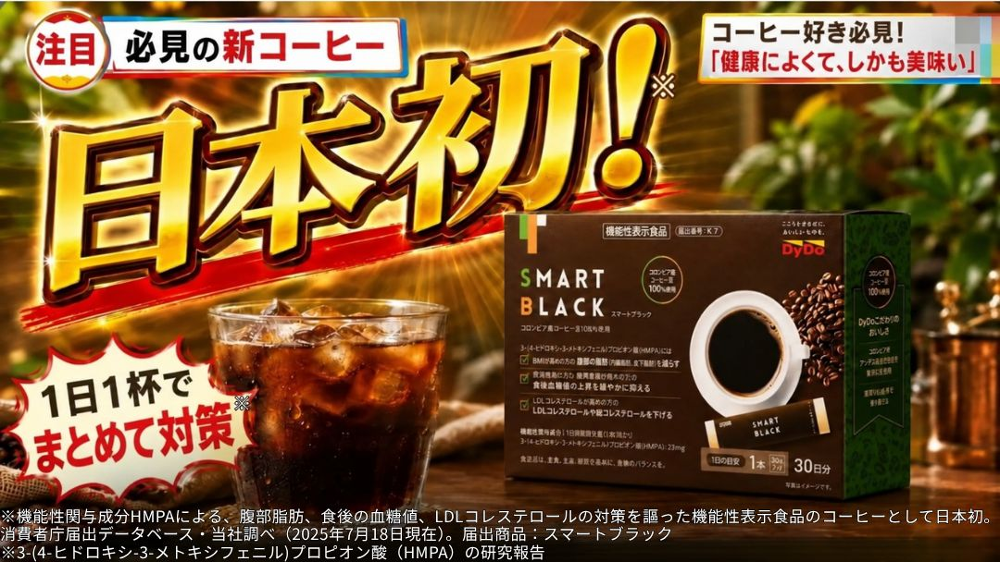
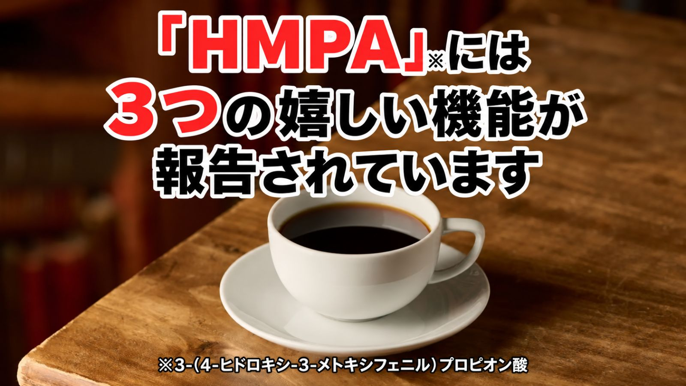
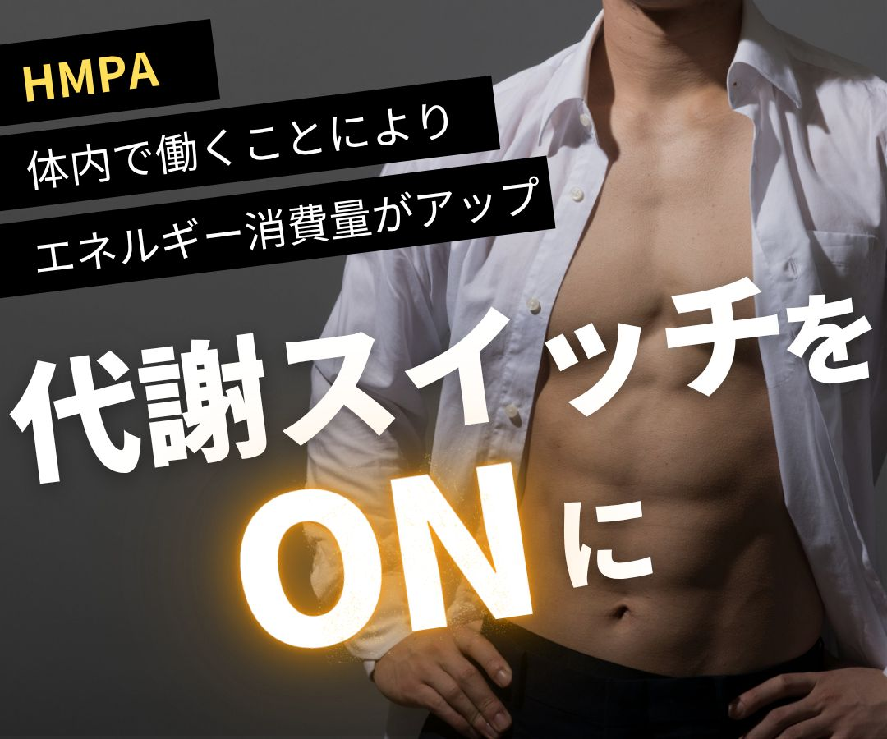
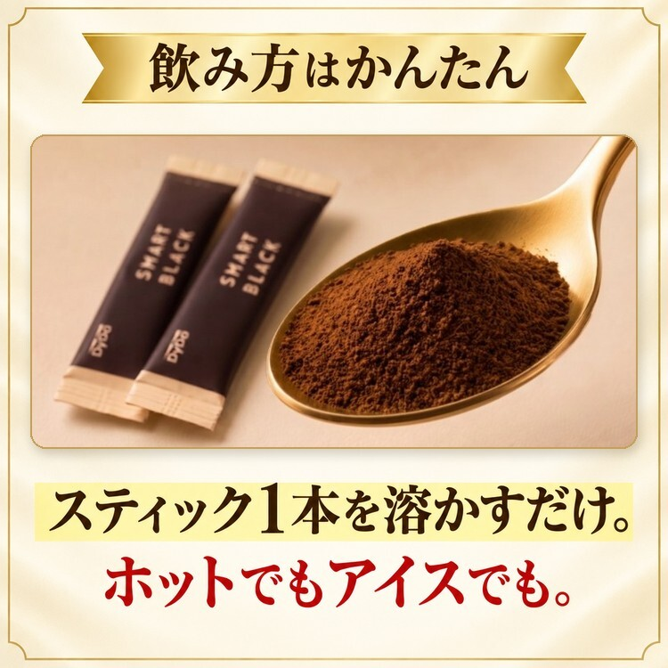
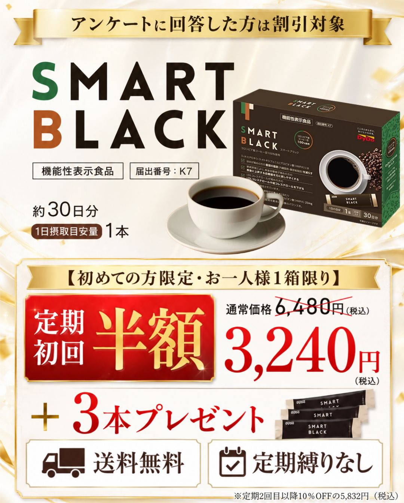
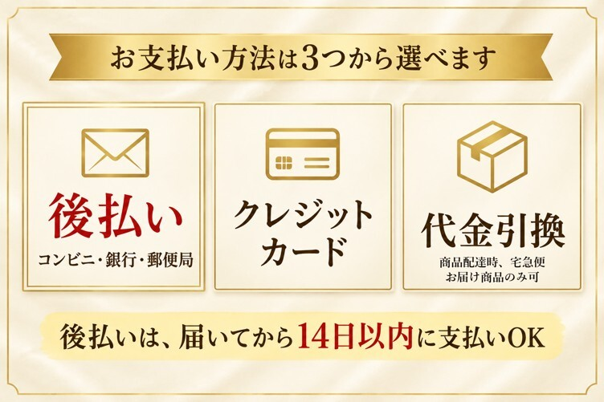

機能性関与成分
HMPA
話題のコーヒーに配合されている
『HMPA』という成分には
以下の科学的根拠が報告されています。

と話題の成分が配合された
日本初のコーヒー、
ご存じですか？

その距離、ただの同僚？
見知らぬ女性。伏せられた画面。
今日だけ、あなたを疑ってもいい？
夫のヒミツ、追跡中。 — 帰宅後のふたり
さっきまで、伏せられていた画面。
私……気にしてたんだ？
修司好きなものは食べたい。
でも、このままも
気になる。
「好きなもの、つい食べすぎちゃうんだ」
「……そうだったんだ。続きを見せて？」
私じゃあ、
一緒に見てみよう。
二人が見ていたのは、この一杯。
と話題の成分が配合された
日本初のコーヒー
※3-(4-ヒドロキシ-3-メトキシフェニル)プロピオン酸（HMPA）の研究報告
機能性表示食品／届出番号 K7
修司コーヒーに、
こんな成分が
入っているんだって。
私何が報告されてるの？
そこ、読んでみよう。
話題のコーヒーに配合されている
『HMPA』という成分には
以下の科学的根拠が報告されています。
※3-(4-ヒドロキシ-3-メトキシフェニル)プロピオン酸（HMPA）の研究報告
※適切な食事制限と運動の併用が必要です。
HMPAを「最初から直接摂る」ことで、
効率的に機能を発揮できるようにしました。

私これ、いつものカップで
作れるのかな。
いつもの習慣にスッと組み込める！

1日摂取目安量：1本。機能性関与成分HMPA：23mg。
※食生活は、主食、主菜、副菜を基本に、食事のバランスを。
スッキリとした飲みやすさを追求して
あのダイドードリンコが開発した商品です。


私気になるなら、
条件も見てみようよ。
修司うん。食べ方も、
ちゃんと見直す。
初めての方だけの特別価格

もちろん送料無料
定期コースによくある
回数のお約束もありません！
いつでも休止・解約OK！
初めての方限定・お一人様1箱限り。公式アンケート回答者向けの割引です。
2回目以降：1箱5,832円（税込）・送料無料。指定サイクルで継続してお届け。最低購入回数なし。
休止・中止：次回お届け予定日の7日前までに
0120-606-909（平日9:00〜18:00）

本品には3-(4-ヒドロキシ-3-メトキシフェニル)プロピオン酸（HMPA）が含まれます。HMPAにはBMIが高めの方の腹部の脂肪（内臓脂肪、腹部総脂肪）とウエスト周囲径を減らすこと、継続摂取により、食後血糖値が高めの方の食後に上昇する血糖値を元に戻しやすくすること、LDLコレステロールが高めの方のLDLコレステロールや総コレステロールを下げる機能があることが報告されています。
1日摂取目安量：1本。機能性関与成分HMPA：23mg。
本品は医薬品ではありません。疾病に罹患している場合は医師に、医薬品を服用している場合は医師、薬剤師に摂取について相談してください。原材料名をご確認の上、食物アレルギーのある方はご利用にならないでください。
原材料：コーヒー抽出物（コーヒー豆、デキストリン）（国内製造）、米ぬか発酵物（デキストリン、米ぬか発酵物）。
本品は、特定保健用食品と異なり、機能性及び安全性について国による評価を受けたものではありません。本品は、疾病の診断、治療、予防を目的としたものではありません。